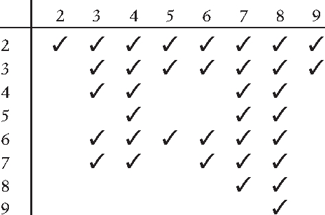
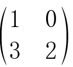
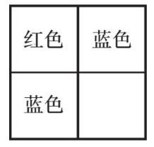
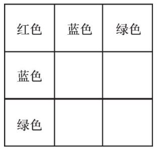
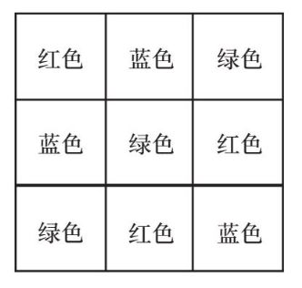
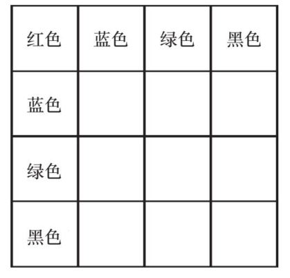
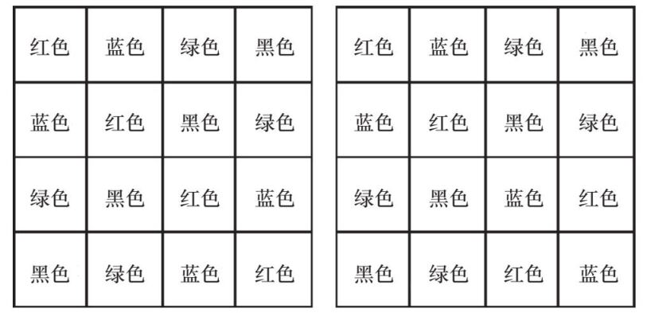
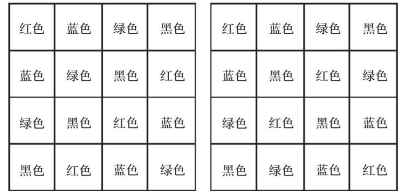
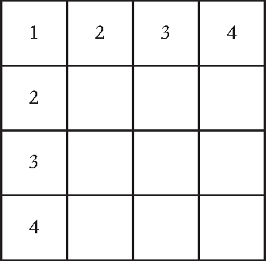
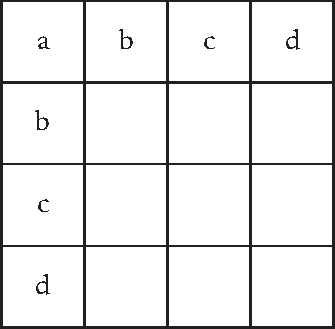

会议巧克力布丁会议巧克力布丁
会议巧克力布丁会议巧克力布丁配料
2个大鸡蛋
140克细白砂糖
140克自发粉
140克黄油（软化）
可可粉（用量随意）
大约7块巧克力
方法
1. 将黄油和细白砂糖一起搅拌成轻软的糊状。
2. 倒入鸡蛋后继续搅拌，然后倒入面粉。
3. 倒入可可粉直至面糊呈深棕色。
4. 将面糊倒入14个单独的硅胶模具中，先装一半满，然后放入半块巧克力，然后倒入更多的面糊。
5. 将烤箱温度设置为180°C，烤大约10分钟。烤好后尽快吃掉。
我管这个配方叫作“会议布丁”，是因为我第一次做它是在一次会议晚宴之后，一大群数学家高高兴兴地涌入我的公寓，请我做一些布丁吃。我不得不在我家的厨房里拿现有的材料进行即兴创作。幸运的是，我总是在厨房里备有很多的巧克力。如此，我就可以参照烤蛋糕的基本原理来制作布丁了。同等分量的鸡蛋、面粉、黄油和糖就是一个不错的起点——我知道有很多其他的蛋糕配方非常复杂，但我们没必要把它们用在这里，不是吗？大多数人都喜爱巧克力，而且放一些巧克力在布丁中间会让布丁内馅儿变得柔软黏稠，而这种温热、黏稠的内馅儿带来的味觉快感会淡化人们对布丁其他部分的注意。
重点在于，如果你理解了一个过程背后的原理，而不是只记住整个过程，你就能更有效地控制这个过程，而一旦出现问题，你也可以更有效地进行解决，并且可以更好地调整整个过程的部分环节，以使这个“配方”适用于不同的目的。除此之外，在面临极端情况（如缺少配料、器具损坏或喝醉酒身体不适……）的时候，你也能应对得更加游刃有余。
如何应对极端情况
在醉酒的时候开车很危险，这种做法在任何时候都是应该避免的。不过，在醉酒的时候烘焙则很有趣（如果你知道自己在做什么的话）。除了严格遵照食谱进行操作，理解烤蛋糕背后的原理还有别的理由。比如，也许你的朋友对小麦过敏，那么你就必须烤制不含小麦的蛋糕。（就我的个人经验而言，小麦粉在烤布朗尼蛋糕时的最佳替代品是土豆粉，在烤奶酥时的最佳替代品是燕麦粉，在烤千层饼时的最佳替代品则是大米粉。）
或者，也许你想做低脂蛋糕，那么你就需要理解脂肪在蛋糕烘焙中扮演的角色，即制造气泡，如此一来，你就可以使用能够发挥相同作用的食物来替代油脂，比如一种很特别的配料——苹果泥。
理解方法背后的原理还能帮助你在不搞砸整个过程的前提下走捷径，而且，如果你像我一样懒的话，你就会一直用这种办法找捷径，或者简化步骤。比如，当你处于醉酒状态时，分离蛋清和蛋黄会变得困难很多。而涉及巧克力的食谱通常都会包含这句话：
把巧克力掰成小块，放在一个可以用于加热的碗里，把碗放在平底锅中，在锅里倒入水，慢慢煮开，确保碗底不会碰到平底锅的底。搅拌巧克力块直至融化。
但我们知道，这句话实质上想说的就是“将巧克力融化”。而我因为实在好奇为什么碗底不能碰到平底锅的底而尝试了这种“错误”的做法，却发现结果好像并没有什么不同。实际上，我还经常借助微波炉来融化巧克力，或者，更好的办法是，将盛放巧克力的器皿直接放在电磁炉上，调小火加热。烹饪书很少向你解释为什么你要这样做某个步骤，这让我很沮丧。但是，理解就是力量。如果你帮助某人更好地理解了某样东西，你就赋予了他更多的力量。也许那些烹饪书的作者是故意这么做的，他们不想让我们理解太多，否则我们可能就不需要他们来发明食谱了。
在数学中，一个类似的例子就是乘法表。将乘法表背下来的确很有用，因为这样一来你就不需要在每一次计算时都扳着手指头数数了。但理解乘法表中的运算结果是怎样得出来的也很重要，这样一来，万一你忘记了其中的某些数字，你仍然可以手动计算出结果。
顺便一说，烹饪书总是会告诉你要用塔塔粉做蛋白糖霜脆饼，但我从没用过这种食材，而我的蛋白糖霜脆饼依然十分完美，美味无比。
为理解汽车工作原理而进行的尝试
我16岁的时候曾因为焊接上了电视。当时，学校布置了一项关于汽车的作业，我们小组需要在两位物理老师的指导下把一辆旧名爵汽车分解，然后组装上新的部件。出于某种原因，我比其他人更擅长焊接，并且我觉得这项工作很让人激动——那些噪声、四散的火花、由高温作业带来的温度上升、它所包含的潜在的危险性，以及用加热的方式将金属连接起来的“魔力”，都让我深深着迷。对比之下，我并不很擅长理解整辆车的运作原理。我所做的只是焊接老师叫我焊接的那些零件。
我猜当地电视台也许是因为觉得一帮女生组装一辆车这件事很奇怪（希望现在这件事不会再被认为奇怪了），所以就决定把我们当作拍摄题材。于是理所当然，我焊接零件的场面也被拍了进去。
采访者问我们是不是想要以此来吸引我们未来的男友，但对我个人而言，我只是因为想理解汽车的工作原理才做这件事的。我仍然认为，理解一件你一直在使用的工具其背后的工作原理是个很好的主意，因为这样一来，在发生故障的时候，你就掌握了更多的主动权，并且你也更有可能让这件工具最大限度地发挥效用。问题在于，随着科技的进步，事物的原理越来越多地被埋藏在电子元件和程序代码中，因而也就更难以被拆解开来，一一理解。在我学会开车之后的一段时间里，我碰到的大多数问题都是电子方面的，而非机械方面的。
不幸的是，当时我试图理解汽车工作原理的计划失败了。我学会了如何焊接，但没能进一步理解汽车的工作原理，所以当我的车遇到问题的时候，除了请求专业人士的帮助，我依然没有其他选择。而对于数学，如果我遇到了问题，我还是有可能自己搞定的——至少，我可以检查一下我的推理，看看其中是否存在逻辑漏洞。
如果在学数学的过程中，孩子们总是得出错误的解答，而找不到错出在哪里，那么数学这门课就很可能会让他们失去信心。这就是为什么在数学教学中，很重要的一件事是理解学生的思维方式，并且指出他们思考过程中的逻辑错误出在哪里，而不是只看最终答案是错是对。
当我们在某颗地外星球上寻找生命的时候，我们首先在找的是什么？
当我们在另一颗行星上寻找生命存在的证据时，我们首先寻找的是水存在的迹象。这是因为我们已经得出结论，或者说已经认定，水对生命体是至关重要的。
欧洲的探索者在遥远的殖民地做了许多错误的决定（包括殖民这件事本身），其中之一就是试图在完全不同的气候条件下种植从欧洲带过去的农作物。他们完全不理解是什么使得农作物生长，因而也就不知道为什么这些农作物在当地气候炎热、土壤贫瘠的地理条件下无法健康生长。也有可能，他们根本没有预料到这些遥远的殖民地的气候会与欧洲截然不同。不管出于什么原因，这些农作物最终都没能长成。
学习事物背后的运作原理的目的之一就是理解到底是什么使得它能够正常运作，如此一来你才可能知道，当你前往一个遥远的地方，发现其地理条件与之前截然不同时，它是否还能正常运作。对于遥远的数学之地，这个道理同样适用。
比如，“自然数”是我们最为熟悉的数学领域之一。这个概念指的是我们数数时所使用的数字：1、2、3、4……它们被称为“自然数”是有原因的——它们的存在对人们来说很自然。但问题就是，我们对它们实在太熟悉了，因而也就注意不到我们使用它们的地方。就像只有当你的手臂受伤时，你才会意识到平时习以为常的、使用双手做的事情现在竟然变得如此困难。我们也许并不会注意到什么时候我们需要同时使用两只手，什么时候只用一只手就够了。刷牙似乎是单手就可以完成的活动，但你要怎么用单手把牙膏挤到牙刷上呢？吃薯片似乎只用一只手就够了，但你要怎么用单手把包装袋打开呢？
自然数也是这样的。我们理所当然地认为我们可以进行加法和乘法计算，无论数字相加或相乘的顺序为何。我们认为8+4和4+8是一样的，并且我们经常使用这个规律来简化计算——把小数字加到大数字上面比把大数字加到小数字上面更简单。对于那些还在扳着手指数数的孩子而言，这个规律更是有用。比如计算2+26，如果是把26加到2上面，孩子们需要数上很久，但如果是从26开始数2个数，计算就会快上很多——而对于老师来说，难处就在于说服孩子们把两个数字换位置以后进行相加，两者所得到的答案是一样的。
同样，6×4和4×6的结果是一样的。这对我们来说是一件好事，因为这意味着我们只要背下来乘法口诀表的一半就够了。对我个人而言，在计算4×6的时候，我只能把这个计算理解为“6个4”，而不是“4个6”。同样，在计算8×6的时候，我只能把它想成“6个8”，而对8×7来说，我则必须把它想成“7个8”。下面这张表展示了乘法口诀表中我相对熟悉和不太熟悉的部分——也许你也有类似但不同的偏好？你更喜欢“8个6”，还是“6个8”，还是二者皆可？

对于这张表，我是先从上往下背，然后再从左往右背的，所以我更熟悉“6个5”，但没那么熟悉“5个6”。我并不知道我的大脑为什么会以这样的方式处理乘法口诀表，不过幸运的是，把乘号前后的两个数字交换位置后得到的答案是一样的，这样一来即便我没能背下所有的口诀，我也能根据我知道的那些推导出其他的答案。
但是，如果我们进入了一个这些原理不再适用的数学领域呢？在这种情况下，我们不得不开始努力思考这些原理都引起了哪些连锁反应。所有的事情都会开始出错。我们还能解方程吗？我们还能画图表吗？我们用于解决所有问题的常规办法还能适用吗？在本书的后面，我会对这些问题给出解答。
一个与自然数有关的有趣的原则是关于质数的。要知道，质数就是只能被1和它自己整除的数（而且1不是质数）。所以最开始的几个质数是：
2，3，5，7，11，13……
现在，对于任何一个数，我都可以把它写成一个质数运算的结果。比如，6=2×3，除此之外没有其他质数相乘可以得到6，除了把2和3交换位置，而这也算不上不同；再比如，24=2×2×2×3，除此以外没有别的质数相乘可以得到24这个结果。这是自然数的一个很重要的特性，但它并不适用于数学的所有领域。
这就给数学的探索者制造了一些麻烦，就像欧洲殖民者在与家乡截然不同的气候条件下试图种植来自家乡的农作物一样。比如，几次证明费马大定理的尝试都失败了，因为当时的研究者认为他们是在一个质因数分解定理成立的数学领域里分析这个问题的，但事实并非如此。他们假设火星有水存在，并据此设计了一个非常“聪明”的火星探索计划。
费马大定理是皮埃尔·德·费马于1637年在一本书的页边写下的一个著名猜想。它是关于下面这个方程的：
an + bn =cn，其中a、b、c均为正整数。
当n=2时，这个方程就是毕达哥拉斯定理（或称勾股定理）：直角三角形的斜边的平方等于两个直角边的平方之和。很多直角三角形的斜边注定不是整数。比如，如果直角三角形两个直角边的长度都是1厘米，那么该三角形的斜边的长度就是√2厘米，这个数不是有理数，更不是整数。然而，也有一些大家十分熟悉的整数边长的直角三角形特例，比如三边长之比为3 : 4 : 5或5 : 12 : 13的直角三角形，其数值关系就满足上面这个方程，如下所示：
32+42=52，以及52+122=132
与之相对，当n的数值大于2时，则不存在能满足这个方程的整数a、b和c。这就是费马大定理的主要内容。不过，这一猜想直到1995年才由安德鲁·怀尔斯借助一些来自看起来几乎完全不相关的数学领域、在当时而言十分先进的数学方法最终予以证明。
数字有哪些基本原理呢？对于这些原理，我们往往会因为过于熟悉而难以察觉到它们的存在。以下是一些你也许早已认为是理所当然的关于数字的事实：
• 数字可以相加。
• 数字可以相减，但结果可能为负。
• 数字可以相乘。
• 数字可以相除，但结果可能是小数。
• 如果我们给一个数字加上0，则它保持不变。
• 如果我们将数字乘以1，则它保持不变。
• 不能用数字除以0。
• 给一个数字加上另一个数字x，又减掉这个数字x，你会得到原来的数字。
• 让一个数字乘以另一个数字x，又除以这个数字x，你会得到原来的数字。
• 几个数字相加的时候，交换它们的位置对结果没有影响。
• 几个数字相乘的时候，交换它们的位置对结果没有影响。但如果你把+、-、×、÷四种运算混合在一起进行计算，则交换数字位置会使结果发生改变。
• 用0乘以任何数字都会得到0。
• 用-1乘以任何数字，都会得到原来那个数的相反数。
• “负负得正。”
• 把同样的数相加几次就等于把这个数乘以几。
类似的“基本原理”还有很多，因此，也许你会想，它们也许能被简化为数量更精简的“超级基本原理”。就像幼女童军的法则一样，只有一条：
幼女童军为别人着想，并且每天做一件好事。
总的来讲，上面那些我所列出的数学原理越靠后越难。当你刚开始接触数字的时候，你很难理解为什么有加法交换律和乘法交换律，为什么1乘以任何数字并不改变那个数字。（最近的一个研究表明，小学生常常在相关的问题上犯错。）或者，用数字乘以0，为什么会得到0？或者更难的一条，我们是怎么找到“负负得正”这个规律的？
你也许会想，这些原理是从哪里来的？发现事物背后的运行原理叫作公理化（axiomatisation），我们稍后会进一步讨论这个话题。在数学里，这个概念指的是，我们总结出关于某个数学领域的原理，比如关于数字的原理，然后看看这些原理在其他领域是否适用。在后文中你会吃惊地发现，“一个数字乘以0就等于0”并不是一个适用于所有数学领域的基本原理，它是从更基本的原理推导出来的。
遵循关于数字的原理的事物在很多方面都不得不和数字类似，但它们不必是真正的数字。比如这样的多项式：
4x2+3x+2
它们并不是真的数字，但它们也遵循数字所遵循的那些原理。
如果我们去掉乘法交换律这条原理的话，那么还有更多的例子符合数字所遵循的原理。比如矩阵：

它们遵循关于数字的所有原理，除了乘法交换律。对于这句话的具体含义，我们需要谨慎对待。在我们进一步谈论公理化的内容之后，我们会重新讨论这个问题。
这就是理解事物背后的原理的意义——把它们应用到其他领域。
请给下面这个2×2的表格涂色。规则是蓝色和红色在每行和每列都只能出现一次。根据已涂色格子的颜色，你会发现对于剩余的格子，涂色的方法只有一种：

解：因为我们一共只有两种颜色，所以我们可以直接试一下：蓝色不行，所以空白格子只能涂红色。
请给下面这个3×3的表格涂色，规则与上一个例子相同。

我们会发现，对于剩余的空白格子，涂色的方法仍然只有一种。
解：我们从正中间的格子开始。首先，它不能是蓝色，因为它左边已经有一个蓝色格子了。我们可以试一下把这个格子涂成红色，这样的话它右边的格子就必须是绿色，但其上面的格子已经被涂成绿色了，所以红色也是错的。排除掉两个错误答案之后，我们就知道正中间的格子只能涂成绿色，而它右边的格子只能是红色，于是整个表格涂好以后就是这样的：

“每样东西在每一行和每一列只能出现一次”这一规则多少有点儿像简化版的数独，这个规则在数学上被称为“拉丁方阵”（Latin square）性质。这是数学中研究“群”概念时的一条十分重要的原理，我们在后文中会再次讨论这个数学分支。
那么，规则不变，下面这个4×4的表格又该如何涂色呢？

这个表格恰好有4种成立的涂色方案。
解：


实际上，这是一个被称为“有限单群分类”（classification of finite groups）的数学分支中的一个意义重大的问题。
最后一个问题：如果把颜色换成数字，你会觉得这道题变得更难，还是更简单了？毕竟，颜色本身对问题的解答并没有什么影响。

如果换成字母呢？

显然，把表格中的某种具体事物替换成数字或字母并不会改变其背后的数学原理，无论出现在表格中的具体事物是什么，这些事物的分布模式都不会改变。